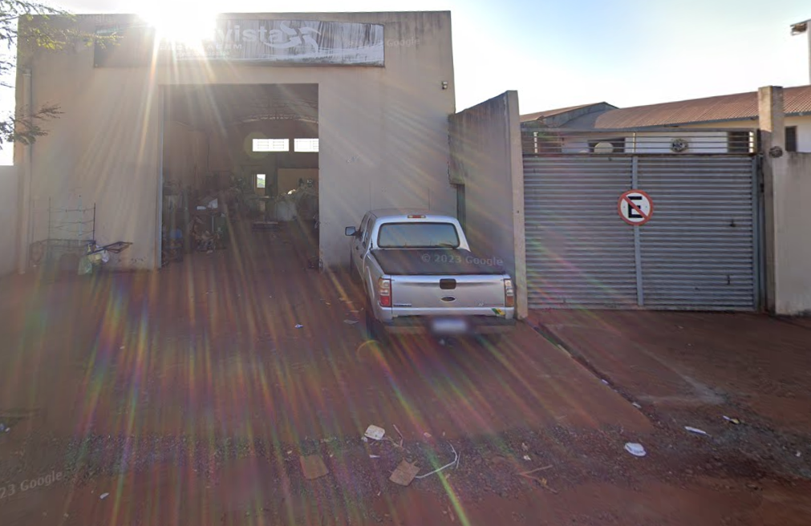

Nossa Missão
Promover a gestão sustentável de resíduos em Cornélio Procópio, facilitando o acesso à informação sobre reciclagem e apoiando a ODS 11 da ONU.
COOPERNOP
R. Portugal, 302 - CENTRO
Horário: 8h às 18hReciclagens Bela Vista
Avenida D. Pedro I, 1378
Horário: 8h às 18hCooperfrança
R. Ismalda Bueno de Oliveira - Benedito catarino
Horário: 8h às 18hCarlão comércio de sucatas
Rodovia do contorno, PR-160
Horário: 8h às 18hPontos de Coleta
 COOPERNOP
COOPERNOP

Reciclagens Bela Vista
 Cooperfrança
Cooperfrança
 Carlão comercio de sucatas
Carlão comercio de sucatas
Benefícios da Reciclagem
- Redução da poluição ambiental
- Cidade mais limpa e organizada
- Geração de renda para cooperativas
- Preservação de recursos naturais